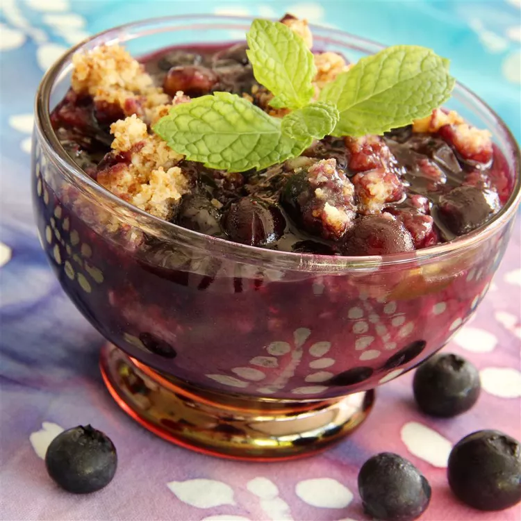

Blueberry Crisp

Description:
Blueberry crisp is a classic summertime dessert, and this easy recipe is sure to please! Delicious with vanilla ice cream.
Ingredients:
- 1 ½ cups all-purpose flour
- ¾ cup brown sugar
- ½ cup cold butter, diced
- ½ teaspoon salt
- 1 cup white sugar
- ¼ cup orange juice
- 2 tablespoons instant tapioca
- 1 teaspoon cinnamon
- 6 cups fresh blueberries
Instructions:
- Preheat the oven to 375 degrees F (190 degrees C).
- Combine flour, brown sugar, butter, and salt in food processor; pulse mixture into coarse crumbs.
- Stir white sugar, orange juice, tapioca, and cinnamon together in a bowl; add blueberries and stir to coat completely.
Spoon blueberry mixture into a large baking dish; sprinkle crumb topping over blueberries.
- Bake in the preheated oven until the topping is golden brown and the filling bubbles, about 40 minutes.